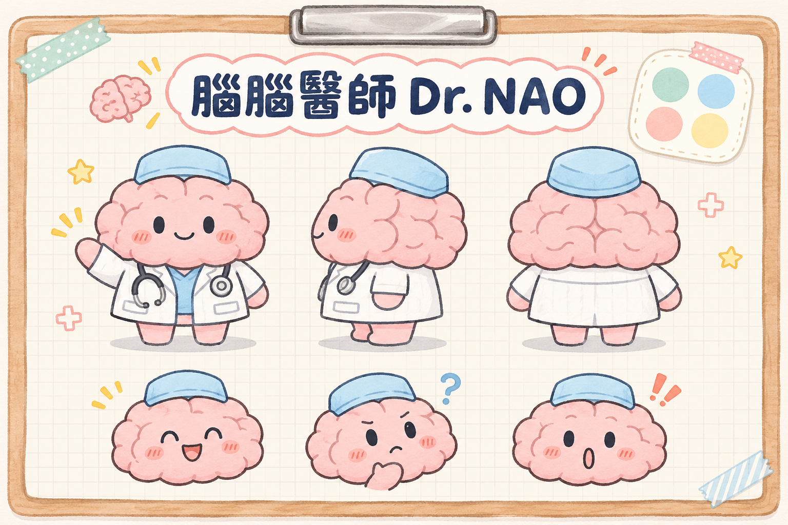
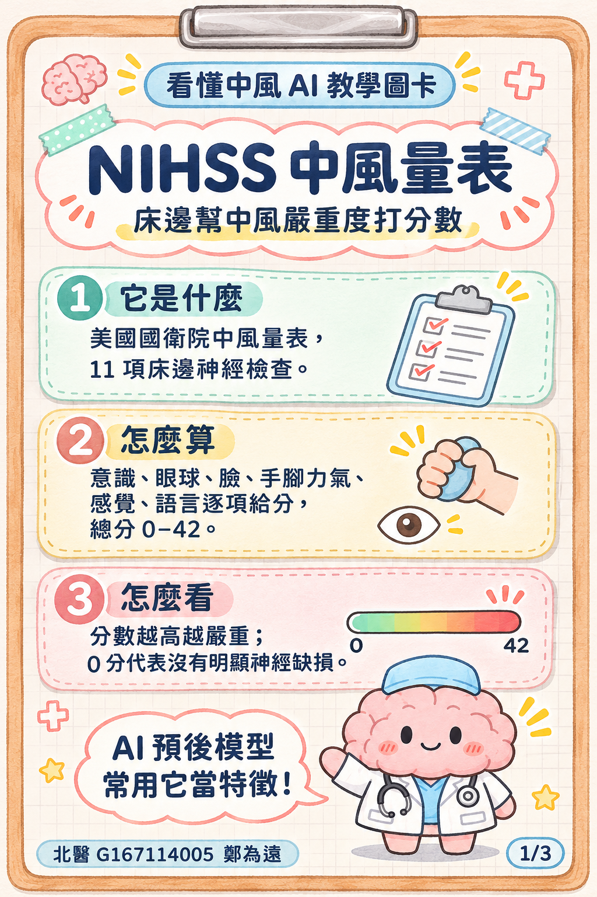
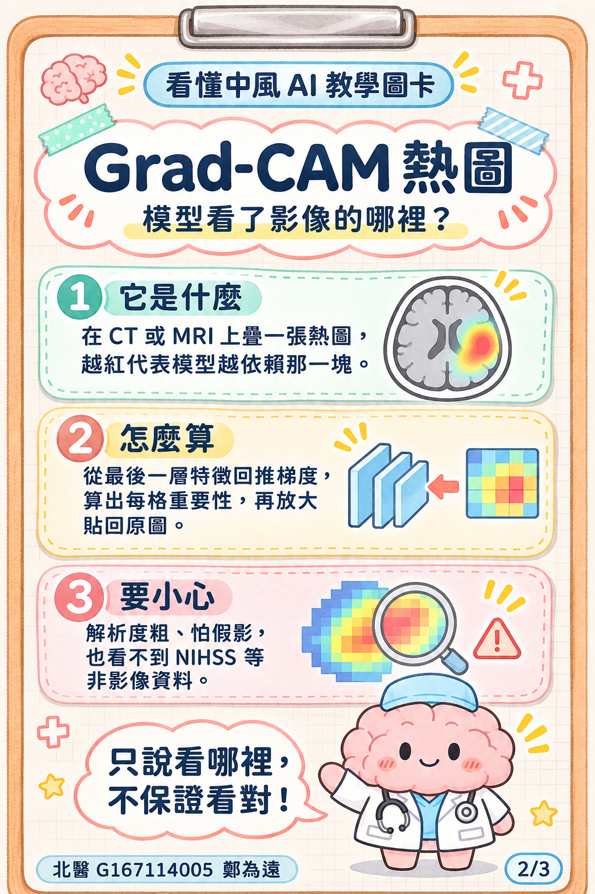
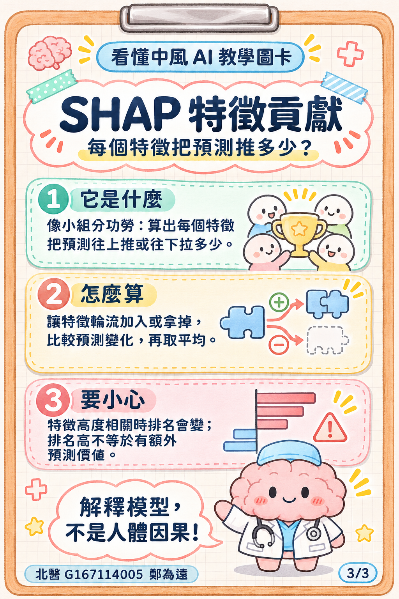

統一風格圖像產生的 Agent｜北醫 G167114005 鄭為遠｜生成式 AI 第 12 週作業




notes 內容筆記 → skill notes-to-html → html 一頁式網頁（只有內容）→ skill html-to-png → png 教學圖卡。
notes
html
png
風格只寫在 style/STYLE.md，內容只寫在 HTML；生圖時每次都貼上同一份風格描述，並沿用同一張角色設定圖，因此三張圖卡風格一致。詳見 README。
style/STYLE.md